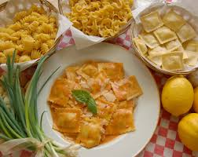

Home
Ravioli Carbonara

Description
Imagine the best of both worlds: the tender, pillowy embrace of ravioli meets the rich, smoky allure of classic Carbonara.
This isn't just a pasta dish; it's an elevated experience where delicate pockets of cheesy goodness are enrobed in a luscious
sauce of cured pork (like guanciale or pancetta), egg yolks, and Pecorino Romano, all brought together with a whisper of
black pepper. Get ready for a symphony of textures and flavors that will redefine your comfort food cravings.
Ingredients
- 1 lb (approx. 450g) fresh or frozen cheese ravioli (or your favorite filled ravioli)
- 4 oz (about 115g) guanciale, pancetta, or thick-cut bacon, diced into 1/4-inch pieces
- 2 large egg yolks
- 1 large whole egg
- 1/2 cup freshly grated Pecorino Romano cheese, plus more for serving
- Freshly ground black pepper, to taste (a generous amount!)
- Salt, to taste (use sparingly, as the pork and cheese are salty)
- Olive oil (optional, for starting the pork if very lean)
Steps
- Cook the Ravioli: Bring a large pot of heavily salted water to a rolling boil. Add the ravioli and cook according to package directions. Fresh ravioli usually cooks in 3-5 minutes; frozen may take 5-7 minutes. Do not overcook! Before draining, reserve at least 1 to 1.5 cups of the starchy pasta water. This water is crucial for the sauce.
- Crisp the Pork: While the ravioli cooks, place a large skillet over medium heat. Add the diced guanciale, pancetta, or bacon. If using very lean bacon, a tiny drizzle of olive oil can help start it. Cook, stirring occasionally, until the pork is crispy and much of its fat has rendered out. This usually takes 7-10 minutes. Remove the crispy pork bits with a slotted spoon and set aside on a paper towel-lined plate, leaving the rendered fat in the skillet.
- Prepare the Egg Mixture: In a medium bowl, whisk together the egg yolks, whole egg, and Pecorino Romano cheese. Add a generous amount of freshly ground black pepper. Whisk until well combined and slightly pale.
- Combine & Emulsify (The Carbonara Magic!):
- Once the ravioli is cooked, use a slotted spoon or tongs to transfer it directly into the skillet with the rendered pork fat (remove the skillet from the heat for a moment if it's super hot). Toss gently to coat the ravioli in the fat.
- Crucial Step: Immediately pour the egg and cheese mixture over the hot ravioli. Quickly and continuously toss the ravioli vigorously with tongs, adding a tablespoon or two of the reserved hot pasta water as you toss. The heat from the ravioli and the pasta water will cook the eggs just enough to create a creamy, emulsified sauce, without scrambling them.
- Continue tossing and adding small amounts of pasta water (1-2 tablespoons at a time) until the sauce is glossy, creamy, and coats the ravioli beautifully. You want a luscious consistency, not a runny one.
- Add Pork & Serve: Stir in most of the crispy pork bits (reserve a few for garnish if desired). Taste and adjust seasoning with a tiny bit more salt if needed (remember the cheese and pork are salty).
- Garnish & Enjoy: Serve immediately, garnished with extra Pecorino Romano cheese and more freshly ground black pepper.
Home